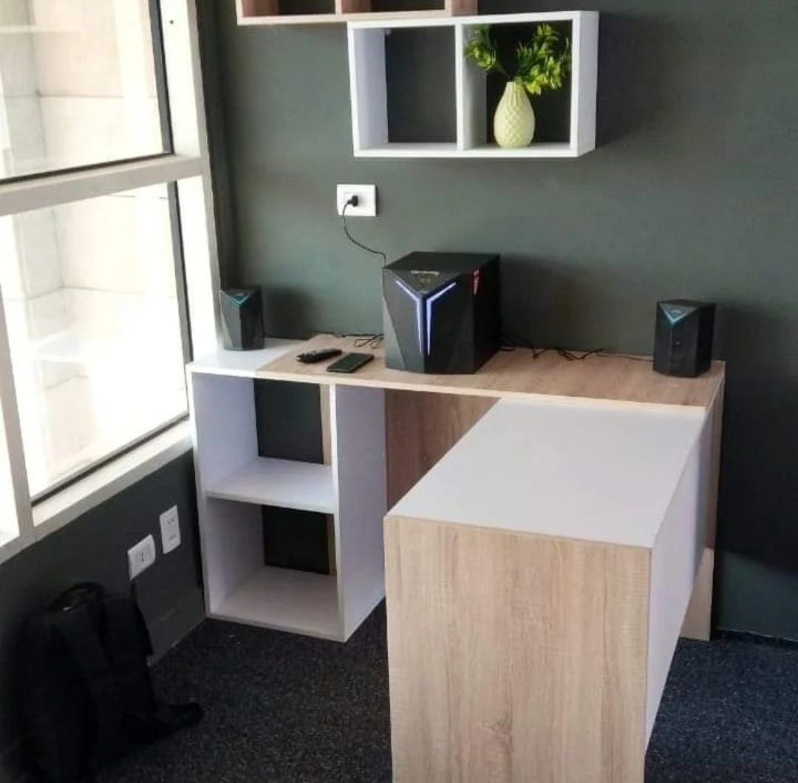
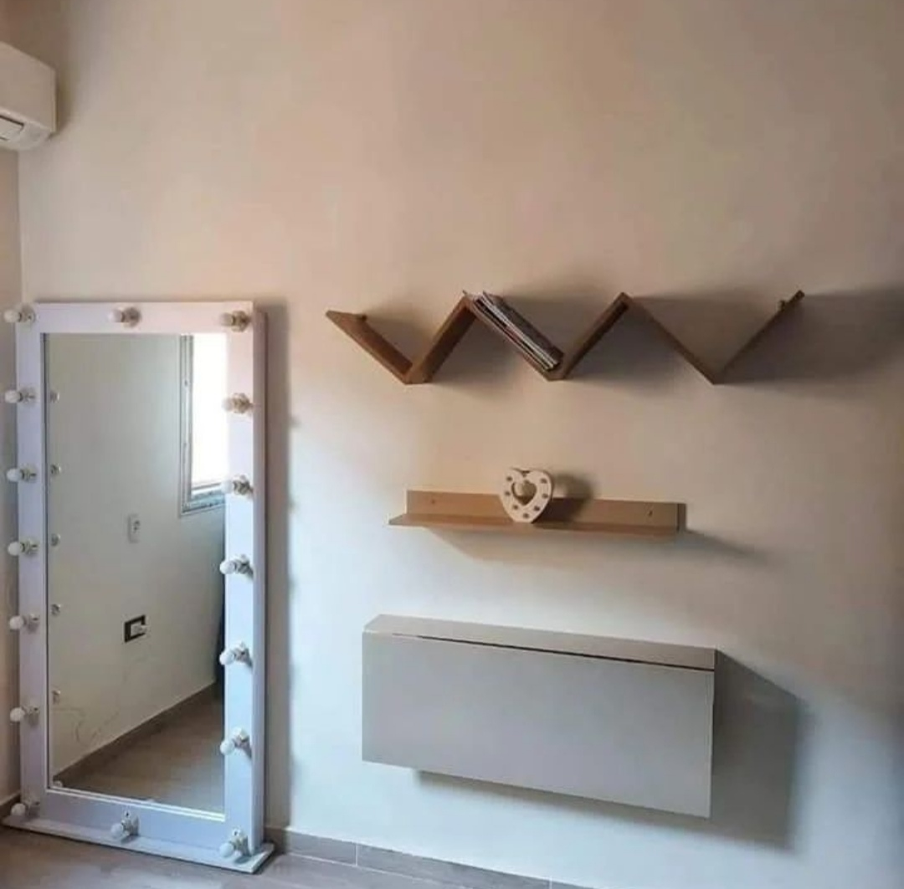
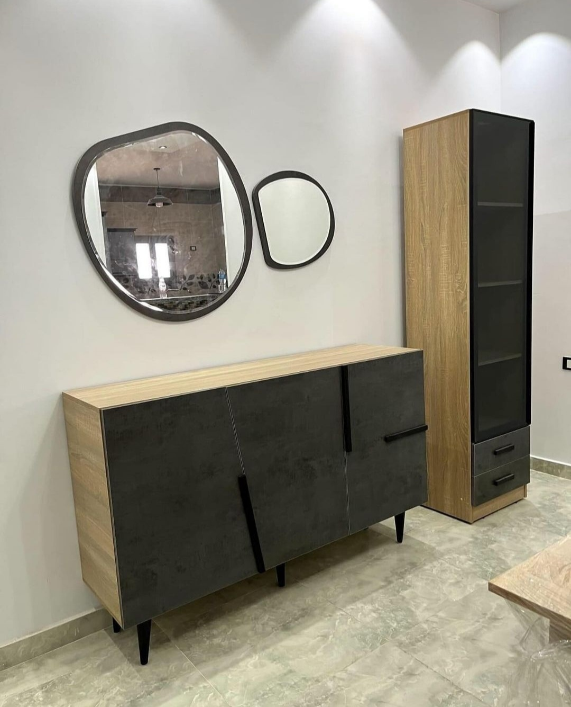

عن الأثاث المنزلي
الأثاث المنزلي هو المجموعة من الأشياء التي توضع في المنزل لأغراض الاستخدام والراحة، ويشمل ذلك الأرائك، الطاولات، الكراسي، والخزائن. يساهم الأثاث المنزلي في تجميل وتنظيم المساحات الداخلية للمنازل ويعكس ذوق أصحابه.
أعمالنا

أثاث غرف المعيشة
مجموعة متنوعة من الأرائك والطاولات المنزلية لغرف المعيشة.

أثاث غرف النوم
أسرة وخزائن ومرايا تلبي احتياجاتك لغرف النوم المريحة.

أثاث غرف الطعام
طاولات وكراسي عصرية تضفي جمالاً على غرف الطعام في منزلك.